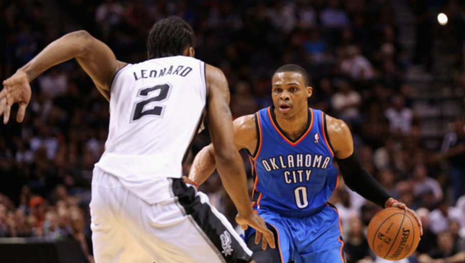

| NBA | MLB | NHL | NFL | FOOTBALL | GOLF | BADMINTON | WOMENS VOLLEYBALL |
|---|
The 2016 Free Agency Season has been filled with ups and downs, numerous teams acquired...
The current basketball climate in OKC is staggering. The acquisition of Victor Oladipo does not outweigh the loss of Serge Ibaka, nd what some might say the biggest loss in the history of the sport-ever, Kevin Durant blah blah blah blabh blabh blabh blah blah blah blabh blabh blabh blah blah brlah blabh blabh blabh blah blah blah blabh blabh blabh blah blah blah blabh blabh blabh blah blah blah blabh blabh blabh blah blah blah blabh blabh blabh blah blah blah blabh blabh blabh blah blah blah blabh blabh blabh blah blah blah blabh blabh blabh blah blah blah blabh blabh blabh blah blah blah blabh blabh blabh blah blah blah blabh blabh blabh blah blah blah blabh blabh blabh blah blah blah blabh blabh blabh blah blah blah blabh blabh blabh
Its not so much the biggest loss per say,
its the impact most assume it will cause on the league."
On the flip side of things, the Banana Boat Antithesis, the New-look Golden State Warriors seem poised to go for at least 65 wins,according to our sources
"The Greatest acquisition of all won't be head turning, nor the revolution televised."
Derrick Rose, Joakim Noah, and Brandon Jennings have teamed up with Carmelo Anthony and Krizstaps Porzigod... some have even gone so far as to dub the the New-look Knickerbockers a "Super Team".